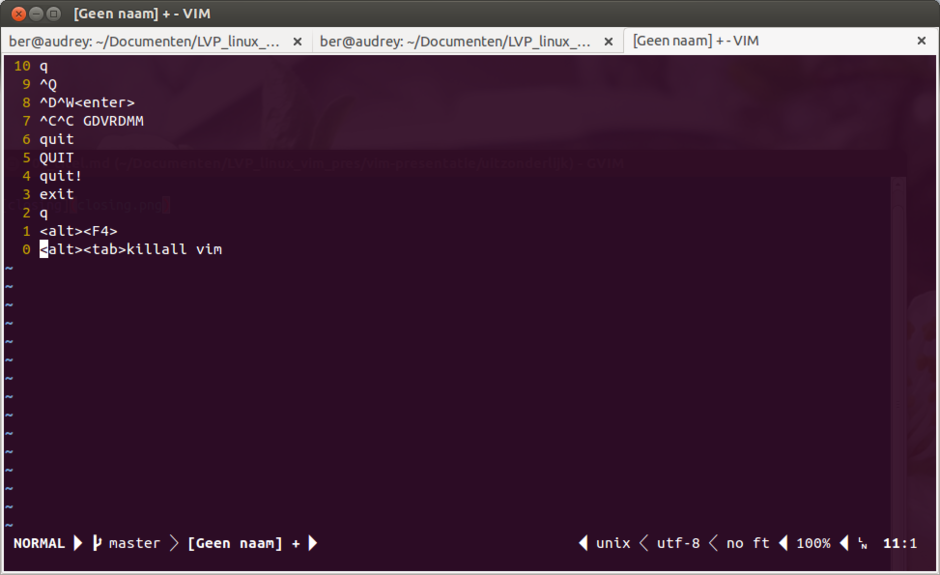
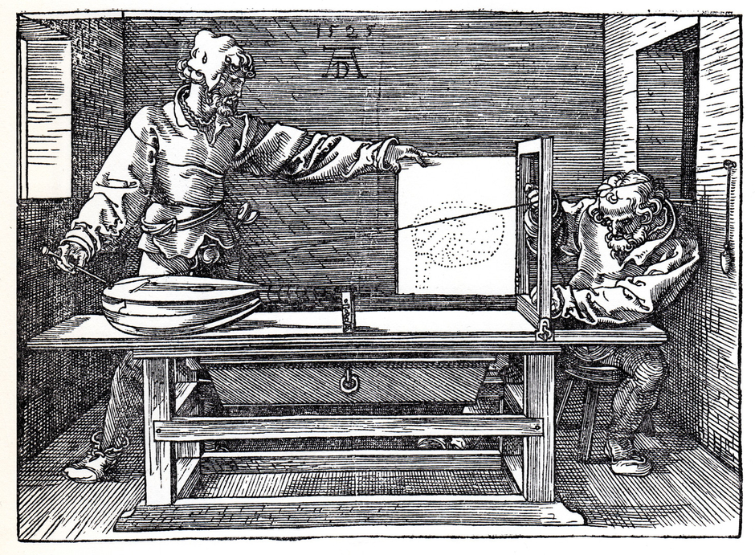
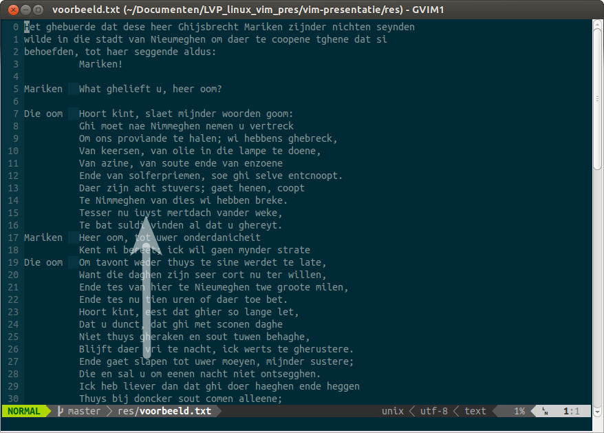
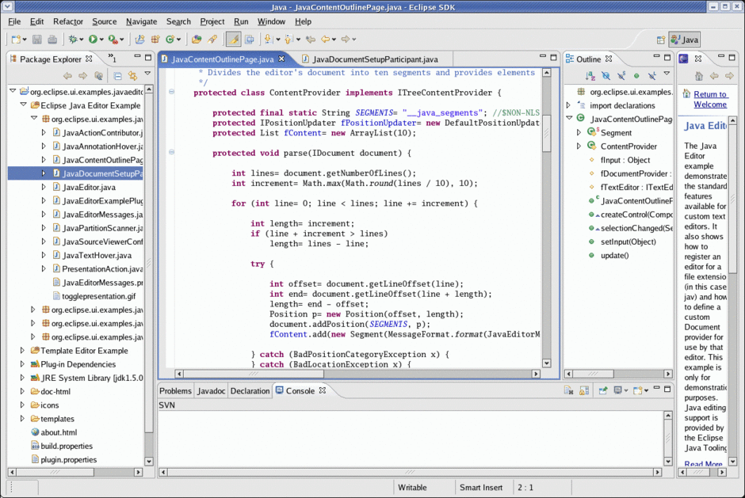
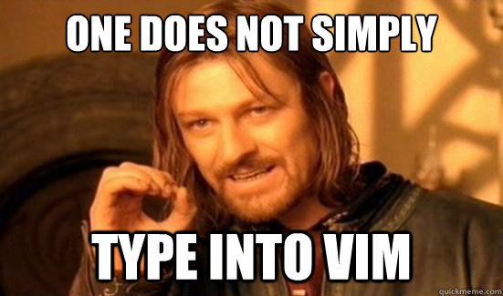
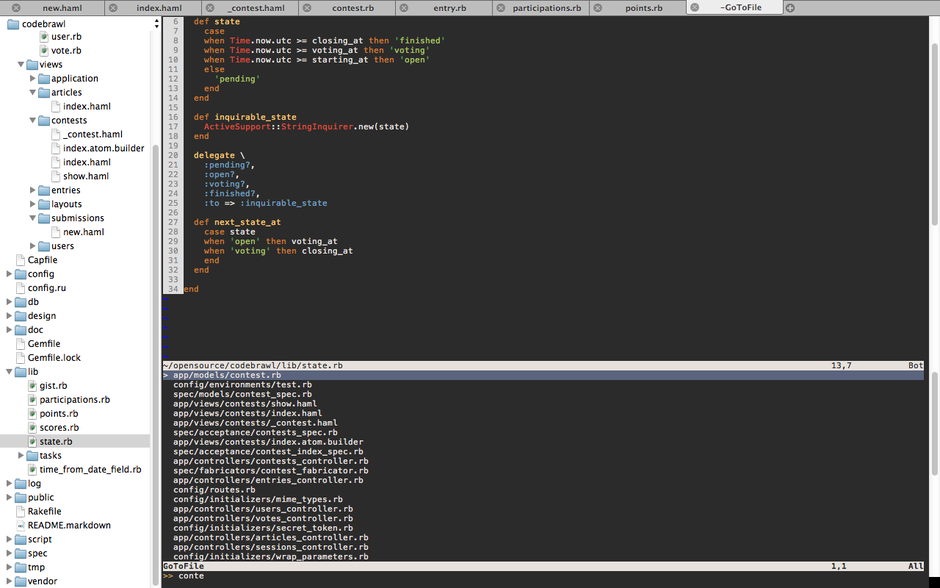
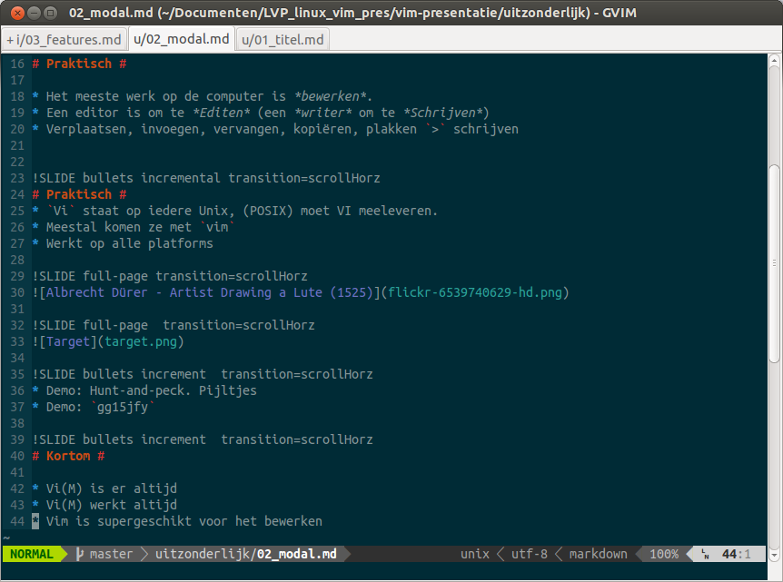

Q: How to create a random string of characters?
A: Give a freshmen vim and ask her to close it.
| z, ? | toggle help (this) |
| space, → | next slide |
| shift-space, ← | previous slide |
| d | toggle debug mode |
| ## <ret> | go to slide # |
| c, t | table of contents (vi) |
| f | toggle footer |
| r | reload slides |
| n | toggle notes |
| p | run preshow |
| P | toggle pause |
0█
~
~
~
~ VIM - Vi IMproved
~
~ Nijmegen 10-09-2013
~ door Bèr Kessels
~
~ ber@berk.es @berkes http://berk.es
~
~
~
~
~
~
~
berkes KesselsVIM voor alles
Q: How to create a random string of characters?
A: Give a freshmen vim and ask her to close it.
:q!: quit!<Esc>i a o etc.:<command>Most time is spent reading, checking for errors and looking for the right place to work on, rather than inserting new text or changing it. Navigating through the text is done very often, thus you should learn how to do that quickly.
> schrijvenVi staat op iedere Unix, (POSIX) moet VI meeleveren.vim

gg15jfy:e <tab> (edit) Met volledige glob ondersteuning.:e! Herlezen: alles ongedaan maken.:ls Lijst van alle buffers.:b <tab> Naar ander bestand.$ vim res/voorbeeld.txt Opent één bestand$ vim res/* Opent meerdere bestanden met glob$ vim res/ Opent map$ vim res/voorbeeld.txt +17 Opent op regel 17$ vim res/voorbeeld.tar.gz Leest en schrijft in een ingepakt bestand.$ vim res/test.log Leest met gemak enorme bestandeni Insert← ↑ → ↓ pgup pgdown home end Rondbladeren<esc> Terug naar normal:w Opslaani Insert<esc>:set pasteV ↑ ↓ = Visual -regelmodus, selecteer met pijltjes, uitlijnenx karakter verwijderen, denk aan doorkruisen.dd regel verwijderen.v pijljes x selecteer, verwijder:w opslaan (write):q afsluiten (quit):wq opslaan en afsluiten:w! opslaan, forceer:q! afsluiten, forceer (negeer opslaan)ZZ opslaan en afsluiten (sneller)
:help write
:help quit



:help netrw
.vim/ in git, op github.EINDE